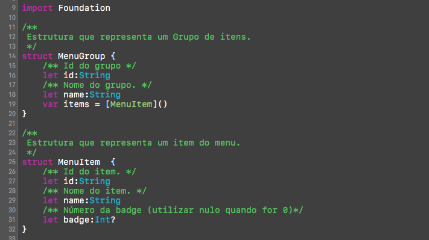
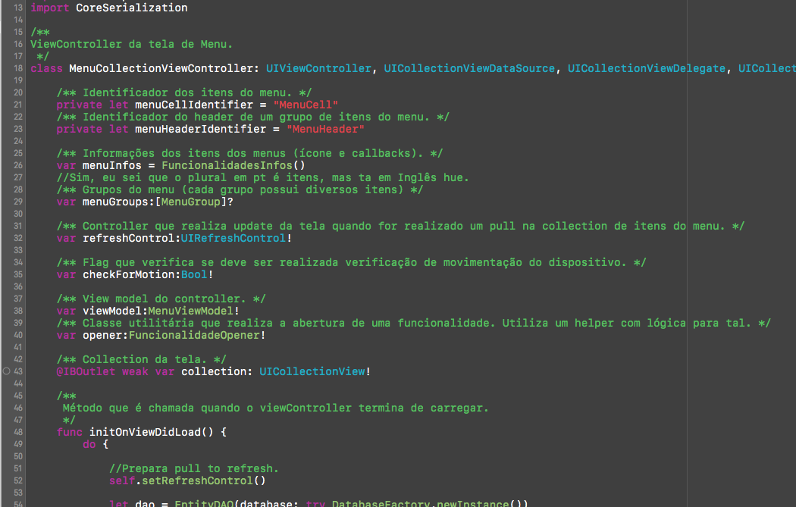

Clean Code Culture
Sobre
- Tecnólogo pela UTFPR
- Paranaense
- Desenvolvedor
- Android
- iOS(Swift)
Exercício comparação
Os códigos a seguir fazem a mesma coisa


Qual é mais simples de entender?
É disso que se trata o Clean Code!
Mas o que exatamente é o Clean Code?
- Legível
- Sustentável (Manutenível)
- Testável
- Elegante
Importante salientar...
Como eu cheguei ao Clean Code?
Situação caótica
- Códigos macarrônicos
- Falta de documentação
- Bugs que vão e voltam
- Equipe exausta
- Muitos 'incêndios'
Ponto de virada
Adoção do Clean Code e patterns de arquitetura
Resultados
- Redução média mensal de chamados
- Equipe com mais tempo para pesquisas
- Pouquíssimos indíces de 'incêndios'
- Taxa de retorno da homologação despencou
Reação da equipe
Eu preciso realmente disso?
Boa parte do tempo passamos lendo código
- Correção de erros
- Alteração da regra de negócio
- Melhorias
- Novas funcionalidades
Quem vai manter o código no futuro?
Quantos 'incêndios' você precisou apagar no último ano?
Eu diria que sempre existe aquele projeto...
Como nem tudo são flores
Subjetividade
Não existe receita de bolo
- Legível;
- Sustentável;
- Testável;
- Elegante;
Devemos ter cautela.
Se o Clean Code é tão bom,
porque não o vemos em ação com tanta frequência?
- Ignorância;
- Teimosia;
- Sindrome do tempo de vida curto;
- Arrogância;
- Segurar o trabalho;
- Depois nós arrumamos;
O que realmente compõem o Clean Code?
Conjunto de conceitos simples, que infelizmente muita gente não coloca em prática
Conceitos como,
- Atenção a atribuição de nomes;
- Princípio da Responsabilidade Única;
- Redução do uso de comentários;
- Implementação de testes;
- Mudança de cultura;
- Bom senso;
Nomenclatura
- Nomes pronunciáveis
- Nomes não ambíguos
- Nomes intencionais
- Dificuldade para atribuir bons nomes
Nomes pronunciáveis
Atribua nomes pronunciáveis em uma conversa
Imagine uma ligação telefônica...
- valorATPFM00NZP
- valorATPFM01NTT
Nomes não ambíguos
Considere a seguinte variável:
double valorFP = 0;
Evite confusões
Você consegue ser mais descritivo que 'valorFP'
- valorFinalProduto
- valorFormaPagamento
Nomes intencionais
- Tipagem
- Propósito
Considere o seguinte trecho de código:
...
private Collection lista;
...
A variável possui um bom nome?
- Não muito bom
- Qual é a tipagem?
- Qual o seu propósito?
Talvez possamos melhorar...
E que tal agora?
...
private Collection listaProdutos;
...
- Um pouco melhor;
- Sabemos a tipagem;
- Mas pra que ele serve?
- Ainda falta informação de contexto;
Talvez se mudarmos um pouco mais...
...
private Collection catalogoProdutos;
...
Interessante, parece que estamos trabalhando com vendas.
- Sabemos a tipagem;
- Temos idéia da intenção;
- Dependendo do contextoisso pode ser suficiente;
Contextos complexo
public class TelaVenda{
private Collection produtosProntaEntrega;
private Collection produtosCarroEntrega;
private Collection produtosSomenteAvista;
}
- Forneça informação ao leitor
- Facilite o entendimento
Agora que já sabemos como atribuir bons nomes, qual padrão vamos utilizar?
...
private Collection catalogoProdutos;
private Collection CatalogoProdutos;
private Collection catalogo_produtos;
private Collection _catalogoProdutos;
...
Não importa
- Desde que toda a equipeutilize o padrão;
- Priorize o padrão da comunidade;
- Decisão da equipe;
Parece básico demais
E realmente é!
Mas acredite, muita gente não faz!
Classes de um projeto qualquer...

OK, já falamos de nomes de variáveis, mas e os métodos?
public class TelaVenda{
action1();
action2();
action3();
action4();
salvar1();
salvar2();
salvar3();
}
Advinha só?
Devemos aplicar as mesmas regras!
- Nomes pronunciáveis;
- Nomes não ambíguos;
- Nomes intencionais;
Entretanto, além dos nomes...
Devemos nos preocupar com o que os nossos métodos fazem e como fazem.
Métodos devem...
- Caber em uma tela;
- Promover a coesão;
- Evitar o acoplamento;
- Ser facilmente testados;
Em resumo, métodos
pequenos
que façam parte do contexto da classe!Exemplo de método que não faz parte do contexto
public class Animal{
public void doTela(List< ItemPedido > list){
...
database.save(list);
mostrarDialog("Sua venda foi salva com sucesso!");
...
}
}
Parece um exemplo bobo, mas isso acontece muito!!
Mas porquê diminuir o tamanho dos métodos?
REUSO
Afinal, que outro cenário utilizaria aquele método que valida, salva, formata, conecta no banco e desenha um pokémon na tela?
Auxílio na redução do tamanho dos métodos
- Estipule um tamanho máximo(óbvio);
- Quebre a responsabilidadedos métodos em níveis;
- Aplique conceitos para evitar repetição e manter e responsabilidade única
Hierarquia(níveis) de métodos
- Alto
- Visão geral;
- Não entra em detalhes;
- Normalmente compoẽm a interface publica da classe;
- Médio
- Aborda um pouco mais o problema;
- Normalmente métodos com visibilidade protegida;
- Baixo
- Normalmente não passam de 5 linhas;
- Com frequência alteram o estado do objeto;
- Métodos privados;
Setas indicam a dependência dos métodos.

Quanto mais próximo do núcleomenor o método.
Don't Repeat Yourself(DRY)
- Avance na abstração e evite repetição;
- Extraia trechos em pequenos métodos ou mesmo pequenas classes;
- Fuja do Copy'n Pasta;
Código duplicado dificulta a manutenção
Novamente, básico mas muita gente não faz!
Single Responsibility Principle(SRP)
- Faça uma coisa só!
- Fuja dos God Objects
- Aplica-se a métodos, classes, variáveis de controle;
Falando em responsabilidade!

Achou pouco? Pense em uma API...
Na qual você chama o setText e o componente mostra uma dialog após definir o texto
label.setText("Texto");
Outro exemplo

Comentários, precisamos mesmo deles?
//When I wrote this, only God and I understood what I was doing
//Now, God only knows
Regra básica dos comentários
Eles podem mentir, pois não compilam nem são executados...
Mais ou menos como isso aqui:

Comentários não melhoram
Código Ruim
Ao invés de sair inserindo comentários pense se o código não precisa de uma refatoração.
Bom uso de comentários
- Descrever uma intenção ou clarear algo;
-
// Formato da data yyyy-MM-dd;
-
- Avisos ou consequências;
- TODO's, que devem ser temporários;
- Javadoc para uma API;
Comentários ruins
Comentários óbvios
// lista de produtos
private Collection listaProdutos;
Comentários óbvios
Everywhere!
Journaling
public double getTotalVenda(){
// 06/06/1666 - batman - alterou o calculo mediante solicitação do Mário,
// adicionado fator multiplicacao - tarefa TF13123120
// 01/12/2006 - robin - adicinou desconto mediante solicitação fulando
double totalVenda = getTotalBruto() * getPorcentagemDesconto() * FATOR_MULTIPLICACAO_INVENTADO ;
return totalVenda;
}
Normalmente existem resistência
Remoção do Journaling

Histórico de commits de um repositório SVN, onde você pode salvar qualquer informação relevante.
Conheça suas ferramentas

Evite código comentado
//private MenuProcess criarMenuCadastro() {
// MenuProcess menuCadastro = new MenuProcess();
// menuCadastro.setText(getString(R.string.atividade_menu_aceite));
// menuCadastro.setWidth(80);
// menuCadastro.setState(MenuProcess.StateMenu.PENDENTE);
// menuCadastro.setResImageIcon(R.drawable.ic_tab_aceite);
// menuCadastro.setResImageIconSelected(R.drawable.ic_tab_aceite_selected);
// menuCadastro.setSelected(true);
// return menuCadastro;
//}
- Ficará lá para sempre
- Atrapalha a leitura
- Utilize VCS
Em dúvida se você deve ou não deixar código comentado?

Método de quase 200 linhasboa parte dele são códigos comentados...

Número de colunas
if(getTextView().getText().toString().equalsIgnoreCase(ordemServicoComercial.getNumOS()))
Não crie linhas intermináveis
Limite de colunas
- Padrão antigo entre 80 ~ 100
- Padrão novo entre 100 ~ 120 colunas
- Facilita o uso de formatação automática
- A equipe deve decidir, não somente uma pessoa
Merge em arquivos com linhas intermináveis

Falando em formatação automática
Membros da mesma equipe devem utilizar o mesmo estilo de workspace com a finalidade de:
- Evitar alterações desnecessárias;
- Problemas com encoding;
Commit sem estilo de workspace

Commit utilizando mesmo estilo de workspace

Exceptions
Como você trata os erros do seu software?
Quantas vezes você ja viu isso?

De a devida atenção as exceptions
Em geral só capture uma exceção quando for realizar alguma ação ou melhorar a mensagem.
Caso contrário passe para 'cima'.
Sim, todos os catchs fazem a mesma coisa


Testes
Você já escreveu algum teste que possa ser repetido automaticamente?
Testes unitários
Como seria testar um método gigante?
Todos os conceitos apresentados podem e devem ser aplicados aos testes.
Exemplo de teste simples para um formatador de moeda:

Caberia uma apresentação inteira sobre testes unitários e Test Driven Development(TDD).
Você pode até não concordar com TDD
Sem problemas, a idéia principal ter testes unitários que possam ser repetidos.
Clean Code
Muito mais que um checklist!

Clean Coder Rule
Sempre deixe o código mais limpo do que você o encontrou.
Com cuidado obviamente!
Tudo isso depende de:
- Equipe comprometida com a qualidade;
- Cooperação;
- Conversa sobre boas práticas;
- Esquecer a filosofia: Beleza e Paciência;
Promova o ambiente colaborativo!
Teoria das janelas quebradas
Clean Code
Para manter as janelas intactas
Clean Code em projetos novos
- Comece pelos nomes;
- Teste a separação de métodos;
- Leia algumas páginas do Clean Code;
- Teste o que aprendeu;
- Discuta com outros integrantes da equipe;
Clean Code em projetos antigos
Começamos onde estamos, com o que temos e fazendo o que podemos.
Referências


JeremyBytes - Clean Code: Homicidal Maniacs Read Code, Too!
Espero ter contribuído!